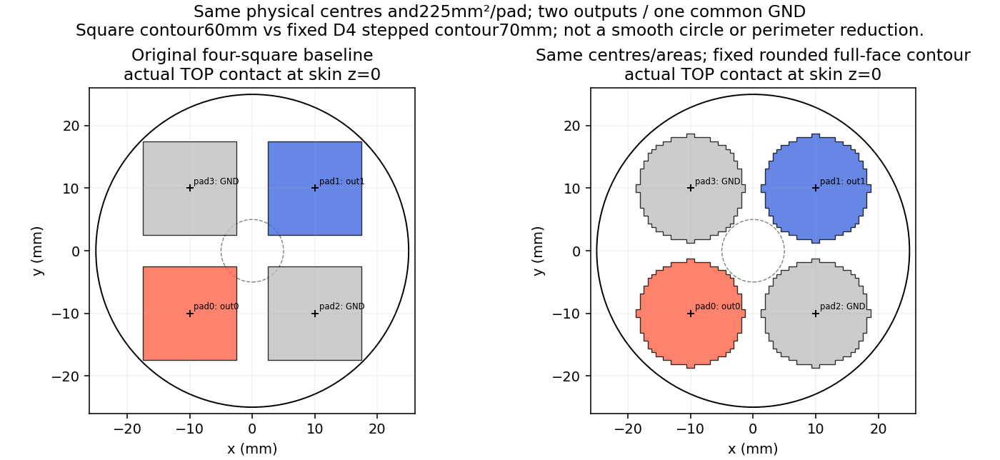
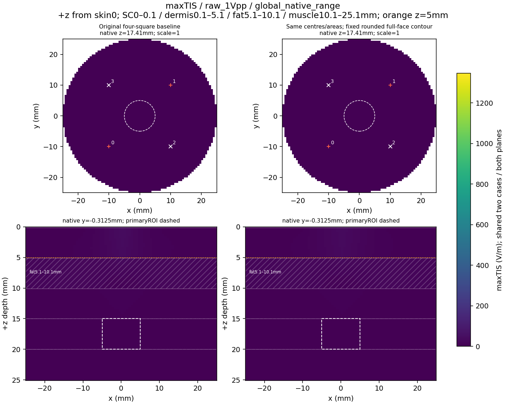
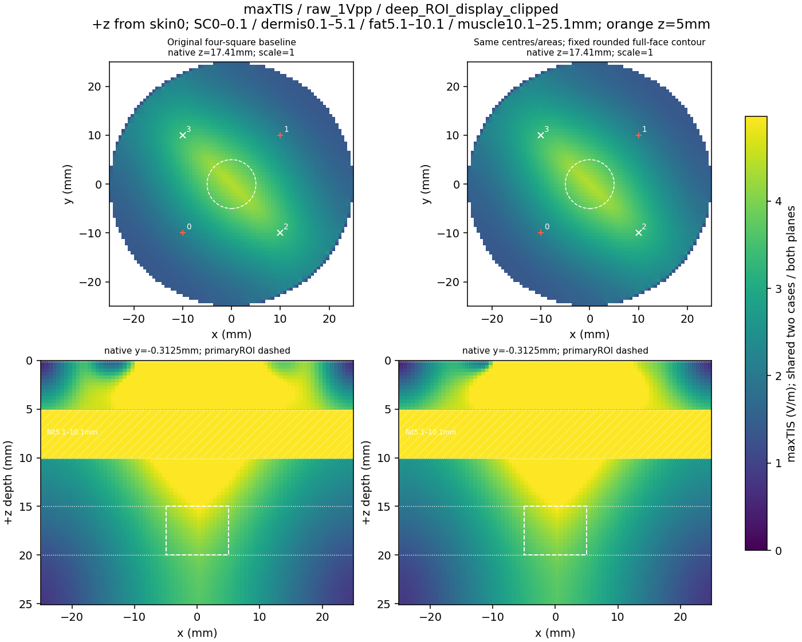
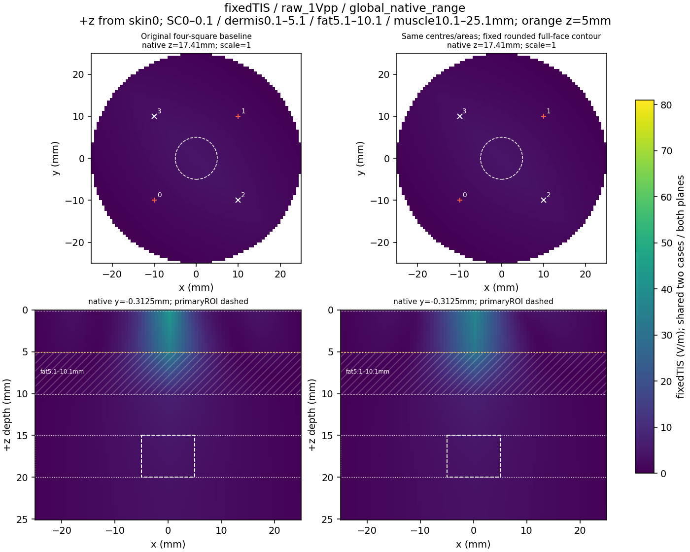
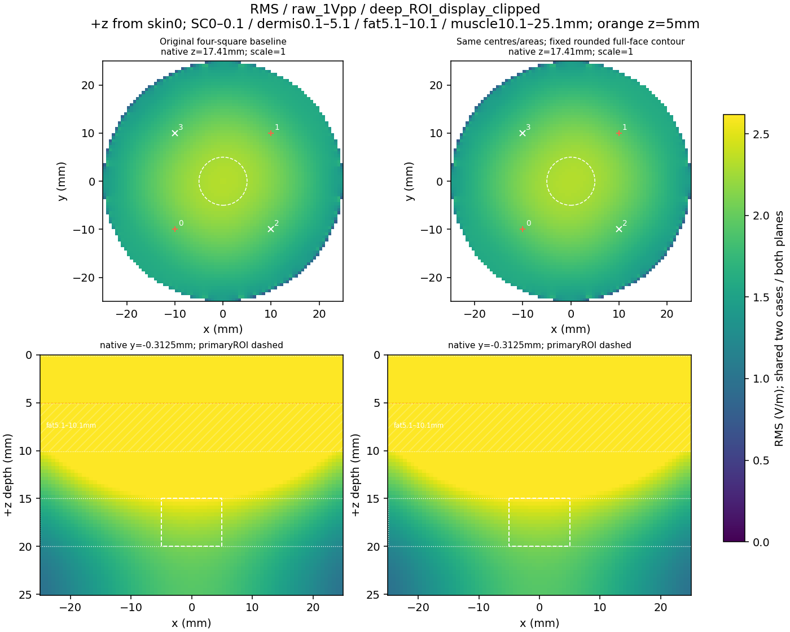
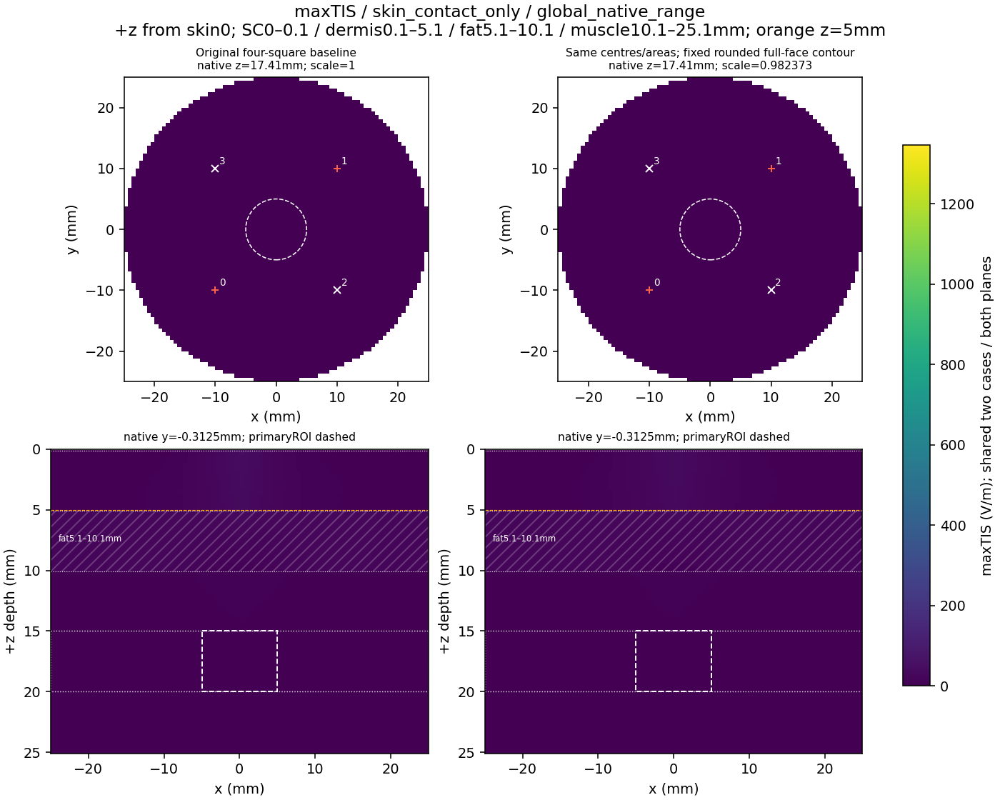
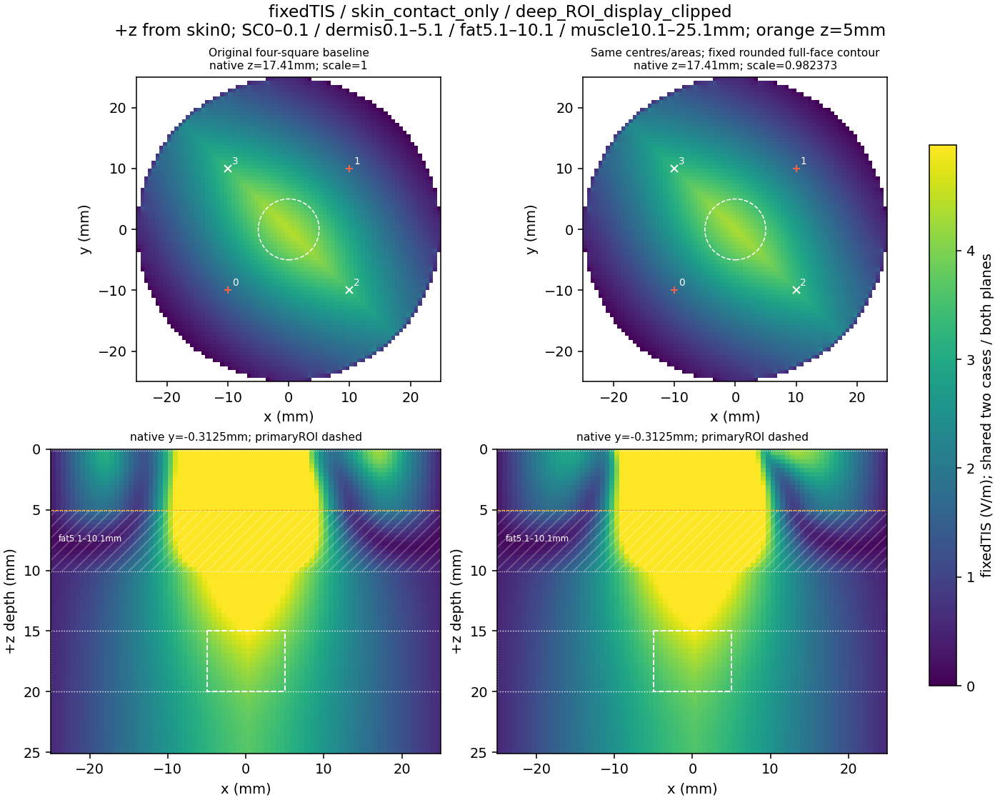
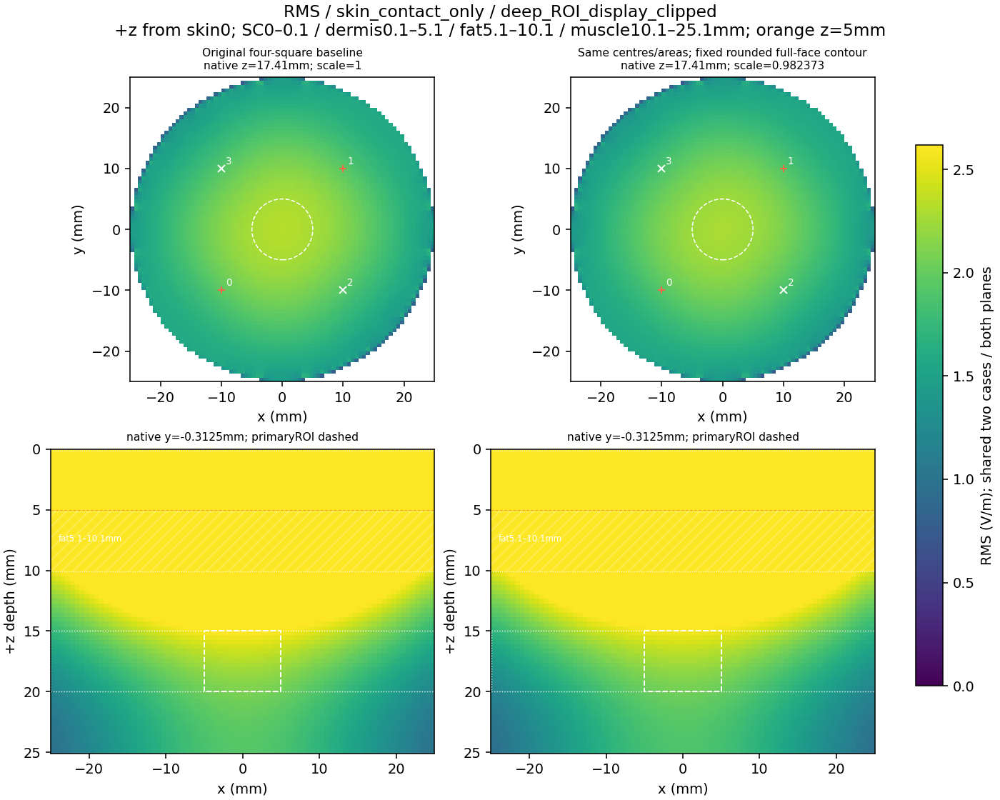

Original square versus fixed rounded full-face union: four identical centres and225mm²/pad, two outputs, commonGND and50Ω. The new contact comprises576full native faces with D4 symmetry and all16cutoff ties; its exact stepped contour is70mm, exceeding the square60mm. It is not a smooth circle or a perimeter reduction. The saved eight-screen result retains six off-target passes and both target failures: no candidate adoption or full convergence. The top panel draws actual SHA-bound physical contact outlines at skin z=0, with no smoothing, hulls or bounding-box substitutes. DeepXY markers project top contact centres; they are not electrodes at depth.
Twelve heatmaps: raw1Vpp and saved skin8 common-cap scale, maxTIS/fixedTIS/all-carrierRMS, global and explicitly clipped primary-ROI ranges. Both columns and XY/XZ planes share each panel color range. +z increases from skin0; primaryROI radius5mm/depth15–20mm. Fat5.1–10.1mm is hatched; high fields at layer interfaces do not establish deep focus. Display clipping changes no source result. Numerical cutoffs are not physiological thresholds.







